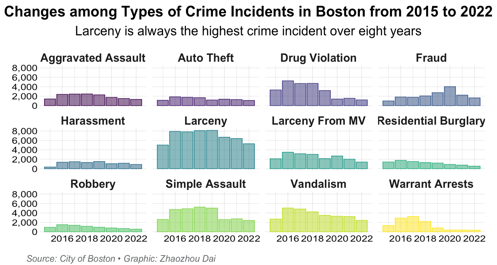

Crime & how it correlates to median household income in Boston
Many factors influence crime rates in a neighborhood, but median household income is a crucial indicator.
By Zhaozhou Dai
Spanning over 90 miles, Boston has a population density of 14,218 people per square mile. The average household income in Boston is $107,608 in 2022, with a poverty rate of 17.96%; meanwhile, the U.S. poverty rate is 12.8%.
The average rent for an apartment in Boston is $3,772; however, the minimum wage is $14.25 per hour in Boston.
Boston, Massachusetts's cost of living is 53% higher than the national average, including housing, utility, transportation and grocery prices.
Importantly, Boston still has 1,545homeless people in 2022.
In 2021, 694,050violent-crime incidents and 817,020 offenses were reported in the United States.
The data analysis of crime statistics and median household income in Boston shows a clear correlation – crime is more prevalent in neighborhoods with lower income.
That is an issue because sweeping societal changes in America, at least partially driven by rising housing costs and inflation, have contributed to a shrinking middle class in America.
The relationship between poverty levels and crime rates is an issue debated by many sociologists, economists and criminologists nowadays.
Some argue that poverty is "closely" related to crime because people below the poverty line are less likely to be educated, are often under more pressure, and are willing to do whatever it takes to acquire the essential possessions needed to survive.
Others point to the recent recession and note that crime rates declined during that time, suggesting that there is no simple relationship between poverty levels and crime rates.
"In the field of urban analysis, crime is an important phenomenon that needs attention and research," Christopher Bruell said. "So, there have been many studies that have been conducted on it, providing us with some references."
Bruell, associate teaching professor of criminology and criminal justice at Northeastern University, focuses on evaluation research, intersectionality and the criminal justice system, and the role of social support in criminal offending.
He said safety is essential for everyone, not only for residence but also for work and study.
"When people consider moving or changing a work and study environment, they often put the safety factor of the neighborhood as one of the most critical factors in the priority option," Bruell said.
In 2021, the most recent year with available data, there were 16.5 violent crimes for every 1,000 Americans ages 12 and older.
That was statistically unchanged from the year before, below pre-pandemic levels and far below the rates recorded in the 1990s, according to the National Crime Victimization Survey.
Professor Patrice Collins gave an opinion on the relationship between crime and median household income.
Collins, assistant professor of criminology and criminal justice and cultures, societies and global studies in the College of Social Sciences and Humanities at Northeastern University.
"I hypothesize that as poverty levels rise, crime rates will rise as well," she said.
She said she believes this because the poor are less likely to be educated, maybe more hungry for money, and may even turn to drugs, which would lead to higher crime rates.
The Boston Police Department (BPD) provides crime incident reports to document the initial details surrounding an incident to which BPD officers respond.
This is a dataset containing records from the new crime incident report system, which includes a reduced set of fields focused on capturing the type of incident as well as when and where it occurred. (Records begin in June 2015 and continue to October 2022.)
Violent crimes in Boston increased slightly in the first half of this year, 2022, compared with the first half of the last year, 2021, while murder, rape and robbery cases decreased, according to an annual midyear survey of police departments in major cities.
District code is hard to understand precisely which area it is, so adding neighborhood names to analyze these districts in Boston.
Boston Police Service Areas and Locations by District:
The above two charts of Boston police service areas and locations show that there are 12 police districts in Boston, and the local police department manages each district.
Understanding how the total number of crimes in Boston has changed in recent years is essential for the public to know whether Boston is becoming safer or vice versa. First of all, exploring the changes in the total number of crimes in Boston for each of the eight years from 2015 to 2020.
Based on the data shown in the bar chart above, it is clear that in the past eight years, the number of crimes in 2016 was the highest, reaching 46,828; however, as of October 2022, the number of crimes in 2022 was the lowest. However, it is worth noting that the number of crimes each year since 2016 has decreased yearly.
In order to have a further understanding of the crime situation in each neighborhood of Boston for each of the eight years from 2015 to 2022, it is important to compare the number of crimes in each of Boston's neighborhoods according to the previously listed Boston Police Districts.
The 12 districts represent each neighborhood are:
◉ A-1: Downtown, North End & Waterfront, West End, China Town, Theater District, Boston Commons, Beacon Hill
From 2015 to 2022, the overall number of crimes in each neighborhood is declining, with the number of crimes in all Boston neighborhoods in 2016 being the highest in eight years, followed by a decreasing number each year. However, it is worth noting that the three neighborhoods of Roxbury (B-2), South End (D-4), and Dorchester (C-11) have been ranked in the top three in terms of total crime.
The violent crime rate in the United States in 2021 was 395.7 cases per 100,000 of the population. Even though the violent crime rate has been decreasing since 1990, the United States tops the ranking of countries with the most prisoners.
U.S. News & World Report recently rated Boston as the 13th safest place to live in America, based on crime statistics and residents’ reports. In essence, it is safer to live in Boston than in most cities of significant size or larger.
According to the crime report of Boston released by the Boston Police Department, it shows that 3,885 overall crimes in 2021 compared to 4,354 in 2020, a roughly 10% decrease. The department reported 34 homicides in 2021 compared to 54 in 2020 and 233 rape incidents in 2021 compared to 181 in 2020.
Compare the crime rates of the whole country of the U.S. and Boston horizontally, in 2021, 694,050 violent-crime incidents and 817,020 offenses were reported in the United States by 11,794 law enforcement agencies that submitted National Incident-Based Reporting System (NIBRS) data and covering 64% of the total population.

The main types of crimes from 2015 to 2020 in the 12 districts above show that "Larceny" had the highest number of crimes, followed by "Drug Violation."
“We did research at our crime lab, and we found that making up nearly 60% of all crimes committed within one given year,” Bruell said. “Larceny and theft affect an estimated 7 million people yearly.”
He said the 1.6% increase in the overall violent crime rate was driven by a slight uptick in aggravated assaults, from 1,138 by the middle of last year to 1,207 by June 2022.
Besides, Bruell pointed out that the homicide rate in Boston was down 38% from last year, with 13 reported through June, compared with 21 in the same time frame last year.
An annual mid-year survey of major city police departments shows that violent crime in Boston rose slightly in the first half of this year compared to the first half of last year, while homicides, rapes and robberies declined.
It is worth noticing that Robberies were down 6.4% from 357 to 334 in 2022.
Harries, who is the author of the Crime and the Environment, has the concentration in crimes and violence in United States.
Demographics of Median Household Income
in 2015 and 2020 in Boston
The district B-3 had the lowest income in both 2015 and 2020.
Source: U.S. Bureau of Labor Statistics • Graphic: Zhaozhou Dai
*Note: The total population of race and ethnicity determines the radius scale of bubbles.
The colors of bubbles used 12 different colors according to the districts.
District A-1 had the highest median household income in both 2015 and 2020, while district B-3 had the lowest
Although the impact of COVID-19 in 2020 caused many people to lose their jobs, resulting in a decrease in total income, these 12 districts still increased in 2020 compared to the median household income in 2015.
$70,000
$46,845
$60,000
$50,000
$40,000
2020
$30,000
2015
$20,000
0
A-1
A-15
A-7
B-2
B-3
C-
1
1
C-6
D-14
D-4
E-13
E-18
E-5
There are 273,188 households in Boston, each comprising around two members. Family establishments represent 47.61% of these Boston households, while non-family units account for the remaining 52.39%. Additionally, 21.41% of households have children, and 78.59% are without children.
The average annual household income in Boston is $113,307, while the median household income is $76,298 per year. Residents aged 25 to 44 earn $99,090, while those between 45 and 64 have a median wage of $79,424. In contrast, people younger than 25 and those older than 65 earn less, at $35,829 and $38,908, respectively.
For the total median household income in 2020 and 2015, the average of the 2020 and 2015 median household income in Boston is $214821.4167 and $169831.4167, respectively.
In 2016 - 2020 of the Boston median household income, the per capita income in the past 12 months (in 2020 dollars) was $46,845.
Scroll to see its range map of crime with median household income in 2015 and 2020 for each district ▼
Compared with the crime incidents and median household income in 2015 and 2020
In 2015, the top three districts in terms of total crime were D-4 (South End), B-2 (Roxbury) and C-11 (Dorchester), while the bottom three districts in terms of median household income were B-3 (Mattapan), B-2 (Roxbury) and E-18 (Hyde Park). It is worth noting that the B-3 district had a higher number of crimes and a lower median household income.
The top three districts in terms of total crime in 2020 were D-4 (South End), B-2 (Roxbury) and C-11 (Dorchester), while the bottom three districts in terms of median household income were B-3 (Mattapan), B-2 (Roxbury) and E-18 (Hyde Park). Compared to 2015, there was still a phenomenon that the number of crimes was higher in places with lower median household income in 2020.
In a 2002 study by World Bank, economists Pablo Fahnzelber, Daniel Lederman and Norman Loiza found that crime rates and inequality positively correlate within and between countries. The correlation is a causal one - inequality leads to crime rates.
This finding coincides with American economist Gary Becker's theory of crime. Becker claims that rising income inequality can have a significant and powerful effect on rising crime rates. Not only that, but a country's economic growth significantly impacts reducing crime rates.
Since a reduction in income disparity and economic affluence has a mitigating effect on poverty levels, this means that poverty alleviation has a crime-reducing effect.
After comparing two graphs on the relationship between crime incidents and median household income horizontally, the above charts show that most districts with a high number of crime incidents have correspondingly low median household income, such as B-2 (Roxbury), B-3 (Mattapan) and C-11 (Dorchester).
On the contrary, districts with a low number of crime incidents have correspondingly high median household income. If crime incidents are low, but their median household income is high.
Based on results from the charts "The Relationship Between Crime Incidents and Median Household Income in 2015 and 2020," Phil He elaborated on his point of view.
He, a criminology and criminal justice professor at Northeastern University, is vice-chairman of the Asian criminological society supervisory board.
"The analysis could have been clearer and more simplified," he said. "But the problem now lies in the two factors that can produce the desired effect, namely, poverty reduction and crime reduction."
He said, however, that the reality is that economic growth has been erratic, and income inequality has increased.
“The United States is a developed country,” he said. “But it ranks third most unequal in income and worst in income gap growth, as well as having the highest percentage of the prison population among industrialized democracies.”
He said the Boston government should focus on reducing poverty and unemployment rates in order to lower the crime rate in Boston and make our society safer and better.
Increased crime rates due to low income have been one of the critical issues to address in the 12 districts of Boston.
According to The Economist, there is a clear relationship between income inequality and crime.
“The connection between income inequality and the crime rate is a subject that has baffled many social scientists, economists, and even those in the legal and justice systems,” Allan Jay said, who is FinancesOnline’s resident B2B expert with over a decade of experience in the SaaS space to work on crime and economics data.
He said the reason is recent developments in these two issues: in the United States, the crime rate has declined since the 1960s. On the other hand, since the 1970s, income inequality has been soaring.
“Many experts even cite factors such as inflation, purchasing power, the consumer price index, and the faster widening of the wealth distribution gap over the past few years,” Jay said. “Such as differences in currency valuations over time.”
He said police enforcement, changes in the legal and judicial systems, and general advances in education, values, and social norms and behaviors affect crime rates, but the median household income is still an essential factor for the crime rates.